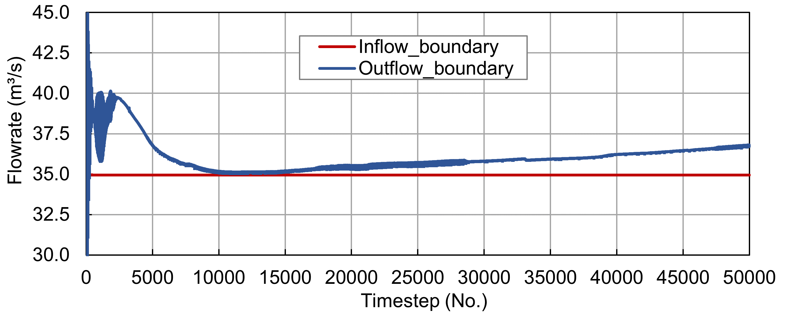
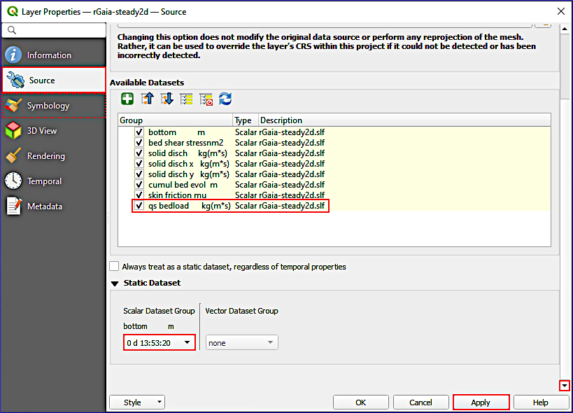

Run and Analyze#
Run Gaia#
Make sure that the simulation folder (e.g., /gaia2d-tutorial/) contains at least the following files (or similar, depending on the simulation case):
A computational mesh, for example, in the form of qgismesh.slf.
A hydrodynamic boundary definitions file, for example, in the form of boundaries.cli.
A Gaia boundary definitions, for example, in the form of boundaries-gaia.cli.
A results file of a Telemac2d/3d simulation for a hotstart initialization, for example, for 35 m\(^3\)/s in the form of r2dsteady.slf (result of the dry-initialized steady run ending at
t=15000).A Telemac2d steering file, such as steady2d-gaia.cas.
A Gaia steering file, such as gaia-morphodynamics.cas.
Expand to review the Gaia steering file gaia-morphodynamics.cas
/------------------------------------------------------------------/
/ Gaia in TELEMAC
/ GAIA STEERING FILE
/ file name: gaia-morphodynamics.cas
/
/------------------------------------------------------------------/
/ COMPUTATION ENVIRONMENT
/------------------------------------------------------------------/
/
BOUNDARY CONDITIONS FILE : boundaries.cli
GEOMETRY FILE : qgismesh.slf
RESULTS FILE : rGaia-steady2d.slf
VARIABLES FOR GRAPHIC PRINTOUTS : B,E,M,MU,N,P,QSBL,TOB
MASS-BALANCE : YES
/
/ NUMERICAL OPTIONS
/------------------------------------------------------------------/
FINITE VOLUMES : NO
/------------------------------------------------------------------/
/
/------------------------------------------------------------------/
/ RIVERBED COMPOSITION
/------------------------------------------------------------------/
/
/ SEDIMENT
CLASSES TYPE OF SEDIMENT : NCO;NCO;NCO / CO-cohesive or NCO-non-cohesive
CLASSES SEDIMENT DIAMETERS : 0.0005;0.02;0.1 / in m
CLASSES SEDIMENT DENSITY : 2680;2680;2680 / in kg per m3
/
/ RIVERBED LAYERS - manual section 3.2.1
ACTIVE LAYER THICKNESS : 0.3 / multiple of D90 - default is 10000
NUMBER OF LAYERS FOR INITIAL STRATIFICATION : 3 / default is 1
LAYERS INITIAL THICKNESS : 1.5 / m - default is 100
/
/------------------------------------------------------------------/
/ BEDLOAD
/------------------------------------------------------------------/
/
/ BOUNDARIES
PRESCRIBED SOLID DISCHARGES : 10.;0.
/
BED LOAD FOR ALL SANDS : YES / deactivate with NO
BED-LOAD TRANSPORT FORMULA FOR ALL SANDS : 1 / MPM - see table for more
CLASSES SHIELDS PARAMETERS : 0.047;0.047;0.047
MPM COEFFICIENT : 8
/
/ BEDLOAD DIRECTION - manual sec. 3.1.4-3.1.7
SLOPE EFFECT : YES / default is YES - set to NO to disable
FORMULA FOR DEVIATION : 1 / use 2 for talmon-1995 approach
FORMULA FOR SLOPE EFFECT : 1 / default is 1 (koch-flokstra) change to 2 for soulsby
BETA : 1.3 / only with koch-flokstra - default is 1.3
/
/ SECONDARY CURRENTS - manual sec. 3.1.7
SECONDARY CURRENTS : YES / default is NO
SECONDARY CURRENTS ALPHA COEFFICIENT : 0.8 / default is 1.
/
/ FRICTION
SKIN FRICTION CORRECTION : 1 / set 0 to disable correction in shallow waters
RATIO BETWEEN SKIN FRICTION AND MEAN DIAMETER : 3. / default is 3.
/
/------------------------------------------------------------------/
/ SUSPENDED LOAD
/------------------------------------------------------------------/
/
SUSPENSION FOR ALL SANDS : YES / deactivate with NO
/
SUSPENSION TRANSPORT FORMULA FOR ALL SANDS : 1
/
/ NUMERICAL PARAMETERS
SCHEME FOR ADVECTION OF SUSPENDED SEDIMENTS : 14
/
/ ADDITIONAL SEDIMENT - manual section 4.2
CLASSES SETTLING VELOCITIES : -9;-9;-9 / use Gaia defaults
CLASSES CRITICAL SHEAR STRESS FOR MUD DEPOSITION : 1000;1000;1000 / N per m2
LAYERS PARTHENIADES CONSTANT : 1.E-03 / in kg per m2 per s - default is 1.E-03
With these files available, open Terminal, go to the TELEMAC configuration folder (e.g., ~/telemac/v9.0.0/configs/), and load the environment (e.g., pysource.openmpi.sh - use the same as for compiling TELEMAC).
cd ~/telemac/v9.0.0/configs
source pysource.openmpi.sh
Environment loading varies by installation
The exact command to load the TELEMAC environment depends on your installation configuration. Common variations include:
Standard installation:
source pysource.openmpi.shorsource pysource.gfortran.shIntel compilers:
source pysource.intel.shCustom configurations: Check your
configs/folder for availablepysource.*.shfiles
If you encounter module loading errors, verify that all required dependencies (Python, MPI, compilers) are properly installed and configured. Refer to the TELEMAC installation guide for troubleshooting.
With the TELEMAC environment loaded, change to the directory where the TELEMAC Gaia simulation lives (e.g., /home/telemac/v9.0.0/mysimulations/gaia2d-tutorial/) and run the *.cas file by calling it with the telemac2d.py script (it will automatically know that it needs to use Gaia when it reads the line COUPLING WITH : 'GAIA').
cd ~/telemac/v9.0.0/mysimulations/gaia2d-tutorial/
telemac2d.py steady2d-gaia.cas
Speed up with parallel computing
With parallelism enabled, speed up the calculation by using multiple cores through the --ncsize=N flag. For instance, the following line runs the simulation on N=4 cores:
telemac2d.py steady2d-gaia.cas --ncsize=4
Guidelines for selecting ncsize:
Start with
ncsizeequal to the number of physical CPU cores (not hyperthreads)For small meshes (< 10,000 nodes), parallelization overhead may outweigh benefits
For large meshes (> 100,000 nodes), significant speedups are achievable
Monitor CPU usage during runs to optimize
ncsizefor your system
Additional useful flags:
--nctile=N: Number of sub-domains for domain decomposition (default equalsncsize)--ncnode=N: Number of compute nodes for cluster runs-sor--sortie: Only re-run the merging step (useful if simulation completed but merging failed)-cor--compileonly: Only compile user Fortran files without running--clean: Remove temporary files before starting
Common runtime errors and solutions
Error: “STOP CALLED - INCREASE ARRAY SIZE”
Cause: Insufficient memory allocation for the mesh or variables
Solution: Reduce mesh size or increase available memory; check for mesh quality issues
Error: “NEGATIVE WATER DEPTH”
Cause: Numerical instabilities, often from too large time step or poor mesh quality
Solution: Reduce
TIME STEP, enableTREATMENT OF NEGATIVE DEPTHS : 2, improve mesh quality in problem areas
Error: “SOLVER NOT CONVERGED”
Cause: Linear solver failed to reach convergence criterion
Solution: Increase
MAXIMUM NUMBER OF ITERATIONS FOR SOLVER, relaxSOLVER ACCURACY, or check boundary conditions
Error: “FLOATING POINT EXCEPTION”
Cause: Division by zero or overflow, often from very small water depths
Solution: Increase
MINIMAL VALUE OF THE WATER HEIGHT, check initial conditions
Gaia-specific: “NEGATIVE CONCENTRATION”
Cause: Numerical instabilities in advection scheme
Solution: Use scheme
14or15for suspended sediments, reduce time step, check boundary conditions for suspended load
A successful computation should end with the following lines (or similar) in Terminal:
[...]
*************************************
* END OF MEMORY ORGANIZATION: *
*************************************
CORRECT END OF RUN
ELAPSE TIME :
1 HOURS
4 MINUTES
34 SECONDS
... merging separated result files
... handling result files
moving: r2dsteady-gaia.slf
moving: rGaia-steady2d.slf
moving: r-control-sections.txt
... deleting working dir
My work is done
TELEMAC will write the files r2dsteady-gaia.slf, rGaia-steady2d.slf, and r-control-sections.txt in the simulation folder. These result files are also available in this eBook’s modeling repository for accomplishing the post-processing tutorial:
Download r2dsteady-gaia.slf (hydrodynamics results)
Download rGaia-steady2d.slf (morphodynamics results)
Download r-control-sections.txt (control section fluxes)
Understanding the output files
r2dsteady-gaia.slf contains the hydrodynamic variables defined in the Telemac2d steering file (e.g., velocity, water depth, free surface elevation). These are computed by Telemac2d with the bed evolution feedback from Gaia.
rGaia-steady2d.slf contains the morphodynamic variables defined in the Gaia steering file (e.g., bottom elevation, bedload transport rates, sediment concentrations). The variables correspond to the VARIABLES FOR GRAPHIC PRINTOUTS keyword in gaia-morphodynamics.cas.
r-control-sections.txt contains time series of fluxes across the defined control sections. Each row represents a time step with columns for each section’s integrated flux.
Post-processing#
Control Section Fluxes#
The control sections enable insights into the correct adaptation of the flow at the upstream and downstream boundaries (prescribed Q only). Figure 194 shows the modeled flow rates where the Inflow_boundary and Outflow_boundary curves converge after approximately 10000 timesteps. Note that the graph shows absolute numbers while the original output in r-control-sections.txt is negative because of the order of node definitions in control-sections.txt. The hotstart initialization makes that the fluxes fluctuate around the prescribed inflow of 35 m\(^{3}\)/s from the beginning. The Outflow_boundary flowrate increase toward the end of the simulation can be attributed to sediment erosion and the free flux downstream boundary type (544-4).

Fig. 194 The simulated flows over the upstream Inflow_boundary and the downstream Outflow_boundary control sections.#
How to distinguish water fluxes at inflow and outflow control sections from sediment transport rates?
With the two boundary files for Telemac2d and Gaia, it is possible to use different boundary types in the hydrodynamic (steady2d-gaia.cas) and morphodynamic (gaia-morphodynamics.cas) steering files. Thus, water volume fluxes can be prescribed at the inflow and the outflow sections through 455-type boundaries (prescribed Q only) in the hydrodynamic steering and/or boundaries files. For instance, with 455-type upstream and downstream hydrodynamic boundaries, adapt the PRESCRIBED FLOWRATES keyword to 35.;35 in the hydrodynamics steering file (steady2d-gaia.cas) without changing the morphodynamics (Gaia) boundary and steering files.
Sediment mass balance verification
To verify sediment mass conservation, enable MASS-BALANCE : YES in the Gaia steering file. The listing output will then include sediment mass balance information at each printout period:
Initial mass: Total sediment mass at simulation start
Final mass: Total sediment mass at current time step
Mass fluxes: Sediment entering/leaving through boundaries
Error: Relative mass balance error (should be < 1% for well-configured simulations)
Large mass balance errors (> 5%) indicate potential issues with boundary conditions, advection schemes, or numerical instabilities.
Visualization with QGIS#
The results of the Gaia simulation can be visualized and time snapshots exported to raster (e.g., GeoTIFF) or shapefile formats by using the PostTelemac plugin in QGIS the same way as explained in the steady2d tutorial. The latest QGIS releases additionally enable loading of a Selafin (results) mesh file (here: r2dsteady-gaia.slf) as QGIS mesh layer, which can then be visualized in the viewport and exported to a video with the Crayfish plugin. To this end, launch QGIS, set the project CRS to EPSG:25833 (ETRS89 / UTM zone 33N), and save the new project in the gaia2d-tutorial/ folder (or where ever the Gaia simulation files live). In QGIS’ Browser panel, find the Project Home folder, expand it, and drag-and-drop the two simulation results meshes (r2dsteady-gaia.slf and rGaia-steady2d.slf) to the Layers panel.
Double-click on r2dsteady-gaia.slf or rGaia-steady2d.slf to open their Mesh Layer Properties, then go to the Source tab to toggle hydrodynamic (e.g., water depth or scalar flowrate m2s) or morphodynamic Gaia (e.g., qs bedload kg(ms)) simulation parameters, respectively, at different timesteps. Figure 195 shows the QGIS mesh Layer Properties window of the rGaia-steady2d.slf simulation results geometry where red boxes highlight steps for toggling output variables and visualization timesteps. In addition, the Symbology tab provides options for value color scales or vector representations (e.g., for velocity vectors in r2dsteady-gaia.slf).

Fig. 195 The mesh Layer Properties window with the Source tab for selecting Gaia output variables. The screenshot indicates steps for visualization of qs bedload at the simulation end time (red boxes). In addition, plot color ranges can be adapted in the Symbology tab (dashed red box).#
rGaia-steady2d.slf (results file) not correctly showing in QGIS
Is the results file rGaia-steady2d.slf not showing up in QGIS? Make sure to import it with its correct georeference: EPSG:25833 (ETRS 89 / UTM zone 33N). If the mesh appears in the wrong location or with distorted geometry, check that:
The project CRS matches the mesh CRS (EPSG:25833)
On-the-fly reprojection is enabled if using a different project CRS
The original geometry file used the correct coordinate reference system
To set the layer CRS manually: Right-click the layer → Set CRS → Set Layer CRS… → search for EPSG:25833.
Note that only parameters defined with the VARIABLES FOR GRAPHIC PRINTOUTS keywords in the hydrodynamic (steady2d-gaia.cas) and morphodynamic (gaia-morphodynamics.cas) steering files can be plotted in QGIS.
Key Gaia output variables for visualization
The following variables are particularly useful for analyzing morphodynamic simulations:
Variable |
Description |
Unit |
|---|---|---|
|
Bottom elevation |
m |
|
Bottom evolution (change from initial) |
m |
|
Bedload transport rate (per unit width) |
kg/(m·s) |
|
Total solid discharge |
kg/s |
|
Bed shear stress |
N/m² |
|
Skin friction correction factor |
- |
|
Suspended sediment concentration (per class) |
kg/m³ |
|
Layer thickness (per layer) |
m |
|
Sediment class fractions in active layer |
- |
Include these in VARIABLES FOR GRAPHIC PRINTOUTS to enable visualization.
To export a video of the simulation results, use the Crayfish plugin:
In QGIS, make sure the Crayfish plugin is installed (recall the QGIS instructions).
In the Layer panel, select rGaia-steady2d (or r2dsteady-gaia).
With rGaia-steady2d (or r2dsteady-gaia) selected, go to Mesh (top dropdown menu) > Crayfish > Export Animation … (if the layer is not highlighted, an error message pops up: Please select a Mesh Layer for export).
In the Export Animation window, go to the General tab and define an output file name by clicking on the … button (e.g.,
velocity-video.avi).Optionally adapt the Layout and Video settings.
Click OK to start the video export.
The first time that a video is exported, Crayfish will require the definition of an FFmpeg video encoder and guide through the installation (if required). Follow the instructions and re-start exporting the video. The following video was exported with Crayfish to visualize velocity vectors:
Video: Sebastian Schwindt @ Hydro-Morphodynamics channel on YouTube.
Note how the velocity vectors evolve over time and that high flow velocities occur at ramps/sills in the river section (e.g., the two transversal maxima close to the upstream boundary or the transversal maximum close to the downstream boundary). Accordingly, the bedload transport at the ramps should also be pronounced. The following video shows qs bedload to verify whether the model got the physical link between flow velocity and bedload right.
Video: Sebastian Schwindt @ Hydro-Morphodynamics channel on YouTube.
After watching the video, it can be concluded that the relationship between flow velocities and bedload is approximately correct, but the model may require some correction by adapting magnitude and direction parameters. The next section exemplarily illustrates how the physical soundness of the model can be analyzed and improved.
Plausibility#
The above-shown results feature steady-state bedload and suspended load transport in an armored-bed river section at a low baseflow discharge of 35 m\(^{3}\)/s. The comparison of the flow velocity and the sediment transport videos suggests that the highest sediment transport rates occur where the flow velocity is high, too. Three sediment size classes were defined in the Basic Setup of Gaia with average grain diameters of 0.0005 m, 0.02 m, and 0.1 m. The simulation predicts that only the finest grain size class will move at baseflow (e.g., in the console output during the simulation). This fine sediment class of 0.5-mm diameters (sand) is transported in the form of bedload and in suspension with no measurable effect on bed elevation. Thus, the model can be assumed to be basically physically reasonable, in particular, considering that nearly no change of the riverbed elevation is modeled despite the local sediment transport peak for fine sediment. Still, to verify the physical plausibility of a morphodynamic model, higher (flood) discharges should be test-simulated. Then the coarser grain sizes of 0.02 m (gravel) and 0.1 m (cobble) should also move.
A physical plausibility check is not a model validation
The physical plausibility check serves for verification of whether the simulation results are physically sound. Physically non-meaningful results would be, for instance, when the water depth permanently increases in a steady simulation, when water flows over floodplains at baseflow or leaves the model at undefined boundary nodes, or when no sediment moves at a high discharge (e.g., a 100-years flood) over an alluvial riverbed. The model validation comes after the calibration (see next section).
Also water depth, flow velocity (vectors), and Topographic change should be analyzed (in QGIS or BlueKenue) since Gaia modifies riverbed elevations. For instance, if the model predicts Topographic change in the form of 10-m deep erosion (scour) at baseflow, the keyword definitions for the riverbed should be revised. Likewise, hydro-morphodynamically relevant parameters such as friction, or direction and magnitude (bedload) correctors should be verified.
Plausibility checklist for morphodynamic simulations
Before proceeding to calibration, verify the following:
Hydrodynamics:
[ ] Water depths are physically reasonable (no negative depths, no unrealistic flooding)
[ ] Flow velocities match expected ranges for the discharge
[ ] Inflow and outflow mass balance is closed (check control sections)
[ ] No spurious oscillations or instabilities in velocity field
Morphodynamics:
[ ] Sediment transport occurs where shear stress exceeds critical values
[ ] Bedload direction aligns with main flow direction (with expected deviations in curves)
[ ] Bed evolution magnitude is plausible (no 10-m scour holes at baseflow)
[ ] Sediment mass balance is closed (check Gaia mass balance output)
[ ] Only mobile sediment classes move (coarse fractions stable at low flows)
Suspended load (if activated):
[ ] Concentrations are within physically reasonable ranges (typically < 10 g/l for rivers)
[ ] Vertical distribution follows expected Rouse profile (for 3D simulations)
[ ] Deposition occurs in low-velocity zones
[ ] No negative concentrations
When a model is finally and approximately physically meaningful, the model can be calibrated with observation data. The next section provides a list of keywords that may be used for calibrating Bedload and/or Suspended load simulations with Gaia.
Calibration#
Recall: How to calibrate?
Calibration involves the step-wise adaptation of model input parameters to yield a possibly best (statistical) fit of modeled and measured data. In the process of model calibration, only one parameter should be modified at a time by 10 to 20-% deviations from its default value. For instance, if the default is BETA : 1.3, the calibration may test for BETA : 1.2, then BETA : 1.1, and so on, ultimately to find out which value for BETA brings the model results closest to observation data.
Moreover, a sensitivity analysis compares step-wise modifications of multiple parameters (still: one at a time) and their effects on model results. For instance, if a 10-% variation of BETA yields a 5-% change in global water depth while a 10-% variation of a friction coefficient yields a 20-% change in global water depth, it may be concluded that the model sensitivity with respect to the friction coefficient is higher than with respect to BETA. However, such conclusions require careful considerations in multi-parametric, complex models of river ecosystems.
This section assumes that the model is already hydrodynamically calibrated (e.g., regarding friction) as described in the steady modeling section. Gaia can then be used to model a flood hydrograph with an unsteady (quasi-steady) simulation. The calibration requires that riverbed elevation measurements from before and after the flood are available (i.e., an event-specific Topographic change map).
Calibration data requirements
Ideal calibration data for morphodynamic models includes:
Pre-event DEM: High-resolution bathymetry/topography before the modeled event
Post-event DEM: High-resolution bathymetry/topography after the modeled event
Hydrograph: Time series of discharge during the event
Suspended sediment concentrations: Measured SSC time series at gauging stations (if available)
Bedload measurements: Sampler or trap data (rare but valuable)
The difference between pre- and post-event DEMs yields the topographic change map (or DoD - DEM of Difference), which serves as the primary calibration target for morphodynamic models.
Bedload Calibration Parameters#
The following list of parameters can be considered for calibrating bedload in Gaia:
Representative roughness length \(k'_{s}\) (cf. Equation (12)) with the keyword RATIO BETWEEN SKIN FRICTION AND MEAN DIAMETER \(\alpha_{ks}\) (default: \(\alpha_{ks}\)=
3.). Note that this keyword is a multiplier of the mean grain diameter \(D_{50}\); thus: \(k'_{s}= \alpha_{ks} \cdot D_{50}\) (goes into Equation (12)):To use this calibration parameter, make sure that
SKIN FRICTION CORRECTION : 1.On dune-form sand riverbeds, start with \(\alpha_{ks}\)=
37.[MAL+17].In alternating bar riverbeds, start with \(\alpha_{ks}\)=
3.6[MAL+17].Increasing \(\alpha_{ks}\) increases the skin friction and thus bedload transport rates.
For models based on the Meyer-Peter and Müller formula (i.e., using a Shields parameter for incipient sediment motion), the CLASSES SHIELDS PARAMETERS keyword may be modified:
If erosion is overpredicted, increase CLASSES SHIELDS PARAMETERS.
If erosion is underestimated, reduce CLASSES SHIELDS PARAMETERS.
Typical range: 0.03-0.06 for uniform sediments, up to 0.07 for armored beds.
The MPM COEFFICIENT can be adjusted (default:
8):Original Meyer-Peter and Müller value:
8Wong-Parker correction for plane beds:
3.97(withCLASSES SHIELDS PARAMETERS : 0.0495)Reduce to decrease overall bedload transport rates.
With slope correction enabled and using the Koch and Flokstra [KF80] correction formulae, adapt the BETA keyword from Equation (13) (default is
BETA : 1.3):If erosion in curved channel sections is overpredicted, decrease BETA.
If erosion in curved channel sections is underpredicted, increase BETA.
Typical range: 1.0-2.0.
To adjust deposition and erosion pattern in curves (riverbends), enable the SECONDARY CURRENTS keyword and modify the SECONDARY CURRENTS ALPHA COEFFICIENT value (cf. Secondary Currents):
Default:
1.0(smooth bed)For rough beds:
0.75Affects helical flow intensity and thus lateral sediment redistribution.
The HIDING FACTOR FORMULA keyword (for multi-class sediment) controls how finer particles are hidden by coarser ones:
0: No hiding (each class independent)1: Egiazaroff formula (default)2: Ashida & Michiue formula4: Karim, Holly & Yang formulaAffects relative mobility of different sediment classes.
Recommended calibration sequence for bedload
First: Calibrate overall transport magnitude using CLASSES SHIELDS PARAMETERS or MPM COEFFICIENT
Second: Adjust spatial distribution using BETA and SECONDARY CURRENTS ALPHA COEFFICIENT
Third: Fine-tune using RATIO BETWEEN SKIN FRICTION AND MEAN DIAMETER
Last: Adjust hiding/exposure effects for multi-class models using HIDING FACTOR FORMULA
Compare simulated topographic change with measured DoD (DEM of Difference) using statistical metrics such as RMSE, Nash-Sutcliffe efficiency, or Brier Skill Score.
Suspended Load Calibration Parameters#
The following list of parameters can be considered for calibrating suspended load transport and deposition-erosion pattern in Gaia:
-
Reduce to enhance transport length and reduce deposition rates
Increase to shorten transport trajectories and enhance deposition
Set to
-9to use Gaia’s automatic calculation based on grain size
CLASSES CRITICAL SHEAR STRESS FOR MUD DEPOSITION:
Reduce to keep sediment in suspension longer (deposition only at lower shear stresses)
Increase to allow deposition at higher shear stresses
Default of
1000N/m² effectively disables the deposition threshold
LAYERS PARTHENIADES CONSTANT (erosion rate constant \(M\)):
Increase to enhance erosion rates
Decrease to reduce erosion rates
Typical range: 1.E-04 to 1.E-02 kg/(m²·s)
LAYERS CRITICAL EROSION SHEAR STRESS OF THE MUD:
Increase to reduce erosion (higher threshold)
Decrease to enhance erosion (lower threshold)
Varies with sediment consolidation; typical range: 0.01-1.0 N/m²
DIFFUSION COEFFICIENT (or rely on turbulence model):
Higher values increase lateral spreading of suspended sediment
Lower values concentrate sediment plumes
Recommended calibration sequence for suspended load
First: Match suspended sediment concentrations at measurement stations by adjusting LAYERS PARTHENIADES CONSTANT (erosion) and CLASSES SETTLING VELOCITIES (deposition)
Second: Adjust LAYERS CRITICAL EROSION SHEAR STRESS OF THE MUD to control where erosion initiates
Third: Fine-tune CLASSES CRITICAL SHEAR STRESS FOR MUD DEPOSITION to match deposition patterns
Last: Adjust DIFFUSION COEFFICIENT if plume spreading appears incorrect
Compare simulated SSC time series with measurements using RMSE or Nash-Sutcliffe efficiency.
- What next?
The calibrated model will also require validation. The validation requires another set of riverbed elevation measurements from before and after another flood (i.e., an additional event-specific Topographic change map). Alas, Topographic change maps are expensive and it is rare to have at least three DEMs from different points in time for a river section, which would enable the creation of two Topographic change maps. For this reason, the calibration dataset is often split in practice. For instance, 2/3 of a Topographic change map may be used for model calibration and 1/3 for model validation. However, such splitting makes that the two datasets are not statistically independent and the validation quality figures will be biased.
Model validation approaches
When independent validation datasets are unavailable, consider:
Spatial split: Calibrate on upstream portion, validate on downstream (or vice versa)
Temporal split: Calibrate on first half of event, validate on second half
Cross-validation: k-fold splitting of available data
Process-based validation: Verify that the model correctly reproduces known physical behaviors (e.g., point bar formation in meanders, pool-riffle sequences)
Sensitivity analysis: Document model response to parameter variations to characterize uncertainty
Always report validation limitations transparently when publishing or applying model results.